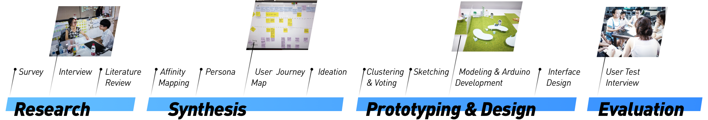
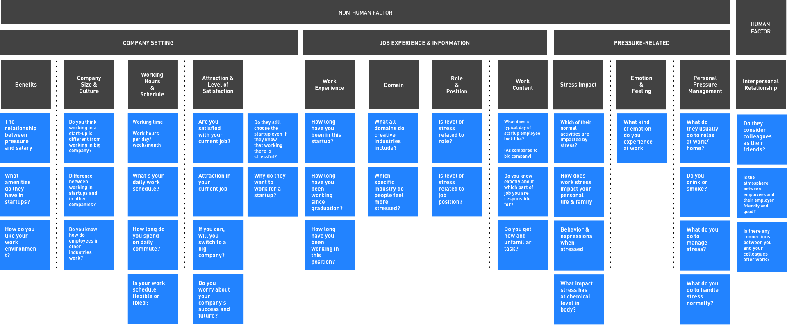
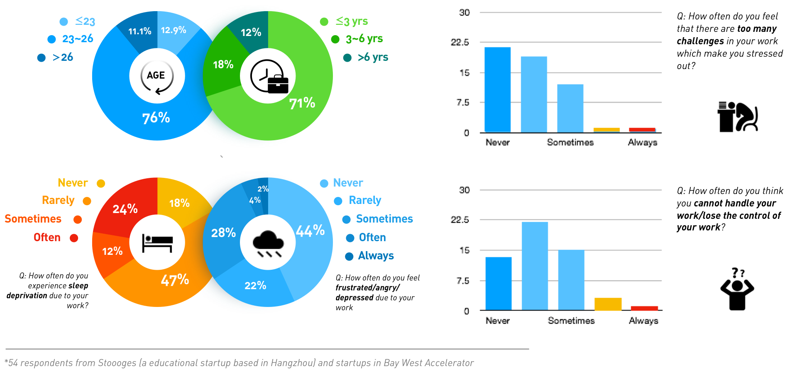

Project Background
Nowadays, China is facing a transition phase. In light of the success of the entrepreneurial pioneer, Alibaba, various startups are set up in different fields of area. More and more people of young generation choose to work at startups or start their own enterprise. However, studies have shown that people working in startups are experiencing immense stress from both outside (from shareholders, employees, customers, and the friends and family) and inside (self-expectation and pressure on success), much higher than those who work in other enterprises. Through this project, we attempted to dig deeper into the reasons and the impacts of the pressure and provide strategies for people working in the startups to get a balanced life.
My Contribution
There were 5 group members in our group and we basically contributed equally to user research, user test and ideation. I spared more efforts on presenting the KT board model, Arduino development, and Lo-Fi/Hi-Fi prototype.
Design Process
I.User Research
I-01.Preliminary Research
To begin with, we tried to define all the potential pressure sources. Through the brain storm and literature review, we came up with a bunch of ideas related to the work pressure from “off work” scenarios to “at work” scenarios. Our focus was more on the “at work” scenarios, which were further divided into human factors and non-human factors.
I-02.Survey
According to the possible pressure sources we postulated, we first conducted a survey* to study the stress level distribution among employees working in startups. The results shows on the right —
- Most of the respondents are people of age 23~26.
- Most of them just started their career within 3 years.
- Though they are young, most of them could deal with their work pretty well.
- Living far away from home /Being single, they seldom experience stress from family or off work scenarios.
However, the survey results still showed that about one third of the respondents experienced sleep deprivation and other negative emotions due to their work. Based on all above, we narrowed our target down to the “at work” “human factors”. We also invited two respondents to our interview who reported that they were experiencing sleep deprivation and depression in the survey.
Besides these two who experienced pressure from their work, our research also included 5 other interviewees who were employees, CEO and group leaders from Bay West Accelerator or Stoooges (a educational startup). We finally generalized two personas regarding CEO/leader and employee respectively.
Through interview, we got our personas and journey map which shed light on how interpersonal relationship/communication cause harmful pressure.
II. Synthesis
II-01. Persona and Inspiration

Primary User
According to our research, we found that employees work perfectly without harmful pressure if there are supportive collaboration and friendly interpersonal relationship. Below shows some key components which helped us to identify the correlation between interpersonal relationship and harmful work pressure.
Pursuit & Starups’ Attraction
They pursue the open-minded lifestyle brought by the compact company size and flat management. Those make them access their leaders and other co-workers more frequently and directly, which help them gain rapid growth in career.
Rapid Growth in Career Path
They have the basic knowledge that working in startups might be exhausting. In fact, they choose to work in startups because multiple tasks and tough challenges would boost their growth in career.
Cooperation Offers Support
With cooperation and support from the team, basically they won’t feel powerless dealing with daily work, even though sometimes it could be overwhelming.
Frustration
Sometimes their ideas are denied without explanation or when their works are misinterpreted. When this happens frequently, frustration will accumulation and finally lower their passion and efficiency in work which further make them anxious or angry.
Lack in Cooperation Cause Negative Impacts
Lack in cooperation / support and shared understanding will induce lower efficiency and frustration. Without friendly and relaxing interpersonal interaction in workplace, even a seemingly easy task would induce reluctance and aversion.
Small Talks Promote Relief
Sometimes when they experience frustration due to their leaders. Talking to other employees would help a lot in reliving negative stress and retrieving high work efficiency. It works especially when they both are dissatisfied with someone.
Sharing Encourages Positive Communication
They share snacks with their co-workers. By doing this they can easily initiate some simple and easy small talks which let them know each other more and bring positive mood.
Long-lasting Stress Leads to Leaving
When those frustration and lack in cooperation last for long time, they turn into mistrust and long-term harmful stress. Those will finally force them to leave the startup.

Secondary User
Compared to those who works in established companies, bosses/founders in startups are more likely to deal with overwhelming and various tasks which break up their attentions for each employee. Meanwhile, a more close interpersonal distance with their employees makes the impacts of interpersonal relationship sharper and more direct.
Secondary User
Compared to those who works in established companies, bosses/founders in startups are more likely to deal with overwhelming and various tasks which break up their attentions for each employee. Meanwhile, a closer interpersonal distance with their employees makes the impacts of interpersonal relationship sharper and more direct.
II-02.User Journey Map
After we discovered that failures in interpersonal relationship and communication might be the pressure sources, we focused more on exploring the problems in all kinds of communication including small talk as well as meetings. By formulating the journey map we noticed how bad interpersonal relationship and communication would finally cause unsolvable and harmful pressure.
Through journey map, we figured out how bad interpersonal relationship and communication patterns reflect on employees' behaviors and how those behaviors then impact their work and finally their mental health.
We saw a few of the behaviors and impacts of bad interpersonal relationship patterns as the pain points. By mediating these behaviors and impacts, we wanted to facilitate communication at startup workplace to finally eliminate the potential pressure source. All those pain points indicated 3 main goals for our design tasks shown below. Finally, we converged them into "HOW MIGHT WE create an open and friendly working environment (physical & mental) to facilitate communication?"